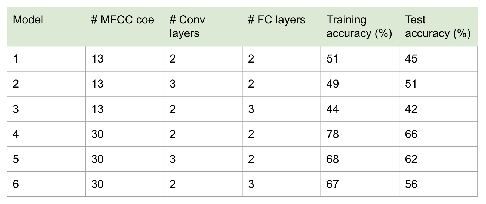

from IPython.display import Image
Image(url="table1.png")

Alice (Yanruo) Zhang, Wen (Diana) Xu
May 14, 2023
Our project focused on predicting the emotion expressed by human speech based on the Mel Frequency Cepstral Coefficient (MFCC) features. Using the speech audio files in the Ryerson Audio-Visual Database of Emotional Speech and Song (RAVDESS), we approached the problem by cleaning the data and transforming the audio files to a machine-readable format, visually exploring the data with a focus on the MFCC features in different emotions, experimenting with 1D and 2D convolutional neural network (CNN) models to train and test. We achieved the highest training accuracy of 78% and test accuracy of 66% via our 1D CNN model with two convolutional layers, two fully-connected layers, and 30 MFCCs, which is higher than the base rate but lower than existing models with a similar approach. In the future, we hope to work on experimenting with other deep learning models, using different numbers of MFCC features, increasing the number of epochs, and applying data augmentation to improve our results. By providing an ethical reflection on speech emotion recognition, we acknowledged the controversiality of this field and urged researchers to ponder on the groups that potentially benefit from and are harmed by related works.
Our code is available at: https://github.com/wendianaxu/speech-emotion-recognition.
Recognizing emotions from human speech is an important task with various applications in human-centered computing, because it allows automatic systems to interpret users’ emotions, and make decisions and provide responses accordingly. In real life, people convey emotions not only through the literal meanings of their speech, but also, and probably more often, with voice qualities such as intonation. Accurate speech emotion recognition with machines has the potential to benefit fields such as criminal investigation, medical care, and the service industry.
Many researchers have tackled the problem of speech emotion recognition with machine learning models. Badshah et al. (2017) used Convolutional Neural Networks (CNN) on speech spectrogram images to classify seven emotions and achieved an overall accuracy of 84.3% across all data. However, emotions of boredom, fear, happiness, and neutral have relatively low accuracies below 50%.
Mel-Frequency Cepstral Coefficients (MFCCs) are coefficients that represent an audio clip and contain information about the rate changes in the different spectrum bands. Xu, Zhang, and Khan (2020) used MFCCs as features to train an attention-based CNN model on speech emotion data. Their model achieved an accuracy of around 76% in classifying speech into nine emotions. Kumbhar and Bhandari (2019) used MFCC features on Long Short Term Memory (LSTM) models and obtained an accuracy of around 85% with the Ryerson Audio-Visual Database of Emotional Speech and Song (RAVDESS), which is the dataset that we used for our project.
Audio speech emotion recognition is a sub-branch of speech recognition, which plays an important role in deepening and widening the AI’s functionality. Potential users of speech emotion recognition include people from commercial industries, the medical field, and the anti-criminal field.
In the commercial industry, for example, a developed speech emotion detection and classification technology can help dialogue systems for spoken language such as call centers, onboard vehicle driving systems, and intelligent voice systems like Siri to better understand human emotions, leading to improved human-computer interactions and a more customized user experience. Similarly, applications and websites utilizing AI for text-to-speech conversions could cater to visually impaired users by conveying emotions effectively.
Beyond commercial applications, the medical field can also benefit from the application of our project. Emotion classification could serve as a valuable tool for various aspects of the field of mental health. Firstly, it could contribute potentially to assisting the diagnosis of psychiatric disorders. If audio-speech detection systems could accurately detect and categorize emotions expressed by individuals, clinicians, and mental health professionals might gain deeper insights into their psychological well-being, potentially leading to more accurate diagnoses and personalized treatment plans. Additionally, emotion classification can play a vital role in offering effective psychological counseling. By analyzing emotional patterns and fluctuations over time, therapists can gain a better understanding of their clients’ emotional states as the sessions go on, thus tailoring their counseling approaches accordingly. Furthermore, the ability to monitor mental states using emotion classification technology holds great promise in preventing potential risks of mental illnesses and speech-related disorders. By continuously assessing the emotions of an individual, it increases the probability of detecting early warning signs of heightened emotional distress, and deteriorating mental conditions, proactively allowing timely interventions and preventive measures. Emotional cues and patterns in speech can provide valuable insights into certain conditions such as hyperkinetic dysphonia and hypokinetic dysphonia. Therefore, by accurately recognizing and classifying these emotional nuances in speech, clinicians may better assess speech disorders, catch the early symptoms, and provide more targeted treatment plans. In summary, serving as a potentially effective tool in diagnosing psychiatric diseases, offering psychological counseling, monitoring mental states to prevent risks, and identifying speech-related disorders, speech emotion classification has wide-ranging applications in the medical field, contributing to the technological revolution for providing better medical care.
Another field with potential users is the realm of crime prevention and resolution. The application of our project could potentially contribute to the development of lie-detection algorithms and devices. The ability to accurately detect deception can have profound implications for law enforcement agencies, intelligence organizations, and legal proceedings. By leveraging the advancements in audio emotion detection and classification, the development of robust lie detection algorithms and devices can empower law enforcement agencies and negotiators with an additional layer of objective analysis, complementing their expertise and intuition. Despite the challenges of ethically incorporating this technology into the legal framework, the inclusion of emotion and lie detection has great potential to augment the capabilities of people who work in the field of anti-criminality.
However, certain groups may not directly benefit from this project. Hearing-disabled individuals, who predominantly rely on non-verbal communication, are excluded from this kind of technology. Greater risks of the application of this project lie in its use for non-ethical deeds. For instance, kidnappers could exploit emotion detection algorithms to gauge the emotions of hostages and their families, potentially facilitating blackmail. We must also address potential biases in this project and its applications. Since the dataset primarily employs English with a neutral North American accent, the resulting models may be biased against speakers with different accents or non-English speakers. In commercial products, it may not work as well for users who are non-English speakers or possess certain dialects. Since accents and languages suggest a difference in cultural, racial, and perhaps even socio-economic status, the careless use of this technology before enough diverse data are collected could further harm the already marginalized groups. This misuse could cause substantial harm especially if used in the medical or the anti-criminal field for making important decisions such as hospitalization or sentencing. Nonetheless, starting with a “standard” English pipeline and acknowledging the potential biases and dire consequences is not a bad way to start developing a technology. However, to foster inclusivity, it is crucial to gradually incorporate more dialects and languages, ensuring the development of comprehensive speech-emotion recognition algorithms.
Our personal reasons to work on this problem of implementing, improving, and spreading the technology of speech emotion recognition emerged from our interest in psychology and human-computer interaction. However, as we consider more the ethical controversies of this project and its applications, we are infused with the sense of responsibility to acknowledge the potential biases and make an effort to proactively address them. Therefore, we are driven by our passion for the technological aspects but also the sense of awareness to bring our interest in the direction of benefiting the world and cautiously making technology inclusive to the marginalized groups. Given our discussion on the potential biases and harm the application of speech emotion recognition may bring, it is difficult to assert that the world will become a better place with more equity, justice, and care with this technology. Therefore, we remind ourselves and urge professionals working in the realm to be cautious and remain critical regarding our work, progressing towards eliciting this technology’s most beneficial potential and reducing the potential disadvantages as much as possible.
Our dataset of speech emotions comes from Ryerson Audio-Visual Database of Emotional Speech and Song (RAVDESS), collected by Livingstone and Russo (2018). The dataset contains vocalizations of only two different English sentences that share the same lexical structure. They were spoken by 24 actors, male and female, each in eight emotions of two levels of intensity. Each combination of sentence and emotion was repeated twice by the same actor. These vocalizations were validated by more than 200 raters who rated them on emotional validity, intensity, and genuineness.
Since the dataset only contains English sentences spoken in a neutral North American accent, it has a limited scope in that it does not represent speakers of other languages and English speakers using other accents.
We chose to use MFCC features as predictors for our models because they have shown good performance in previous works. We experimented with different numbers of MFCC features: 13 MFCCs, which is a common choice for speech recognition (Hasan, Hasan, and Hossain (2021)), and 30 MFCCs. We also experimented with taking the mean of MFCCs across time, resulting in an 1D feature matrix with only MFCCs, or including time as another dimension in our feature matrix. Our targets are the emotion labels from the original dataset.
Because the audio files in the dataset contain silent moments, we trimmed out these moments to reduce irrelevant features. We used 1D CNN models on our aggregate MFCC features and 2D CNN models on MFCC features across time. We started from basic model architectures with two convolutional layers and two fully-connected layers, and adjusted them by adding layers according to training results. For example, we added dropout layers for models that exhibited overfitting.
We trained our models on GPU in Google Colab. We used cross entropy loss for our loss function and Adam for optimizer. Our learning rate was 0.001.
We evaluated our models primarily using running training accuracy and testing accuracy. The size of our test set was 20% of the entire dataset.
Among our 1D CNN models, the best model is the one with 2 convolutional layers, 2 fully-connected layers, and 30 MFCCs. This model has a training accuracy of 78% and a test accuracy of 66%, which although is not the most ideal result, still makes a much better prediction than the base rate of 12.5% (Table 1). The accuracy results of all our 1D CNN models are shown in Table 1.
Since we found that the test accuracy increased as the number of MFCCs increased in our 1D CNN models, we only developed 2D models with 30 MFCCs (Table 1). Table 2 demonstrates the accuracies obtained from all of our 2D CNN models. In general, 2D CNN models illustrated a significant improvement in training accuracy but not test accuracy compared to the 1D models, and our best model remains to be the 1D model with 2 convolutional layers, 2 fully-connected layers, and 30 MFCCs (Table 2).
From Figure 1, we see that as the number of features increases, while the training accuracy increases to reach a plateau, the validation accuracy remains fluctuating, indicating the problem of overfitting. The overfitting is especially obvious in our 2D models, so we attempted to adjust it by adding the dropout layer (Figure 1). The overfitting got slightly under control, which is illustrated by a drop in the training accuracy plateau and an increasing trend in the validation accuracy (Figure 1).
Table 1. The summary statistics of the 1D convolutional neural network (CNN) models. # MFCC is the number of MFCCs. The # Conv layers is the number of convolutional layers. The # FC layers is the number of fully-connected layers. The learning rate for all the listed models is 0.001, and the number of epochs is 50.
Table 2. The summary statistics of the 2D convolutional neural network (CNN) models. All models have 2 convolutional layers, 2 fully-connected layers, 30 MFCCs, and a learning rate of 0.001. The number of epochs are set to be 50.
Figure 1. The change of training and validation accuracies over epochs on selected 1D and 2D CNN models.
Our project is a complete process with the following planned steps: 1) cleaning the data and transforming the audio files to a machine-readable format, 2) exploring the data with a focus on the MFCC features, 3) using deep learning models to train the test dataset, and 4) testing with the test dataset. We have a notebook showing our working flow with detailed commenting and illustrative figures.
We said in our proposal that our evaluation of the success will be based on: 1) completeness in data cleaning, training, and testing; 2) use of plots that demonstrate comprehensive data exploration and data analysis; 3) level of detail in documentation; 4) level of model accuracy; 5) depth of discussion on implications and potential biases; and 6) the clarity, conciseness, and accessibility of the presentation.
We did a quite good job on criteria 1), 2), 3), and 5). For criterion 4), although we improved our models in the limited time, they still have many potential directions for improvement. Although our models achieved accuracies significantly higher than the base rate, they are less accurate than existing models that used similar approaches to recognize speech emotions, which typically have accuracies of 70-80%. If we had more time, we would do the following to improve our test accuracy:
For criteria 6), we had a clear and understandable presentation with assisting tables and figures however, we were a bit short on time to present the final slide on the discussion of ethics for our project, which is an important component of our project. If we had more time, we would also like to perform a bias audit on our results, for example on whether accuracies vary for male and female voices.
In terms of the deliverables, our proposed success was to have a Python package and a Jupyter notebook. However, since we did not write any separate Python scripts, and everything was integrated into one notebook, we still consider that we have met the completeness goal.
In terms of model quality, we said partial success is that despite the completeness, the model has a low accuracy. Since our model reached a much higher-than-base-rate accuracy that is lower than the accuracy achieved by publicly available algorithms, we think we fall between partial and full success.
In the process of researching our project and writing the proposal, I learned about some basic tools to process audio files such as Librosa, Pytorch, and TensorFlow. I used to wonder how one transforms audio files into matrices that are readable and trainable by the computer, so the exploration before we started was useful for solving that mystery for me. During implementation, I learned specifically how to use these libraries and packages to load data and preprocess data. I was also able to integrate the knowledge we learned in class on CNN and modify the code from our lectures to fit our datasets. In the many problem-solving sessions I had with my partner, I gained a deeper understanding of the concepts in CNN such as FC layers, dropout layers, and batch normalization, and also enhanced my programming and debugging skills, especially when working with matrices and dimensionality. Working with my partner also broadened my perspective on various ways to dive deeper based on what we already had. For instance, while I mainly thought of incrementing the parameters such as epochs and the number of features to better our models, she thought about examining the accuracies in different emotions respectively to explore areas of potential improvement.
As for my personal goals including submitting everything on time, communicating effectively, contributing my part of writing, coding, and presentation in a relatively equal position with my partner, and navigating GitHub collaboration, I think I have achieved all of them. The communication part went extremely well as we set chunks of time every week to work together on this project. The area that I may need more improvement in is developing more out-of-box thinking in terms of project development and more proficiency in coding. Both require intentional practices that I will try to give more attention to and spend more time on.
I will aim to carry this collaborating habit with me in my future research career in a computation biologist position, in which I could set shared working times with my partners and report our progress weekly. In addition, I would also like to carry the critical thinking skills I obtained in this class regarding the ethics of machine learning into any of my future work. I will keep thinking about the groups that benefit from and are harmed by applications of the computational work I will be doing, bringing more awareness in my research circles on the controversial ethical issues in scientific research.